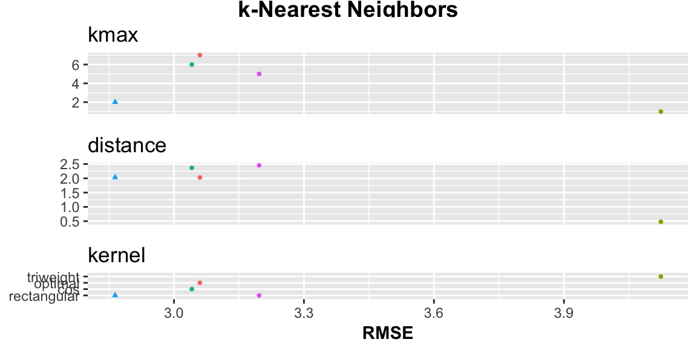

plot.model_list.RdPlot performance of models
# S3 method for model_list plot(x, font_size = 11, point_size = 1, print = TRUE, ...)
| x | modellist object as returned by |
|---|---|
| font_size | Relative size of all fonts in plot, default = 11 |
| point_size | Size of dots, default = 3 |
If TRUE (default) plot is printed |
|
| ... | Unused |
Plot of model performance as a function of algorithm and hyperparameter values tuned over. Generally called for the side effect of printing a plot, but the plot is also invisibly returned. The best-performing model within each algorithm will be plotted as a triangle.
#> #>#> #> #>#>#> #> #>plot(models)